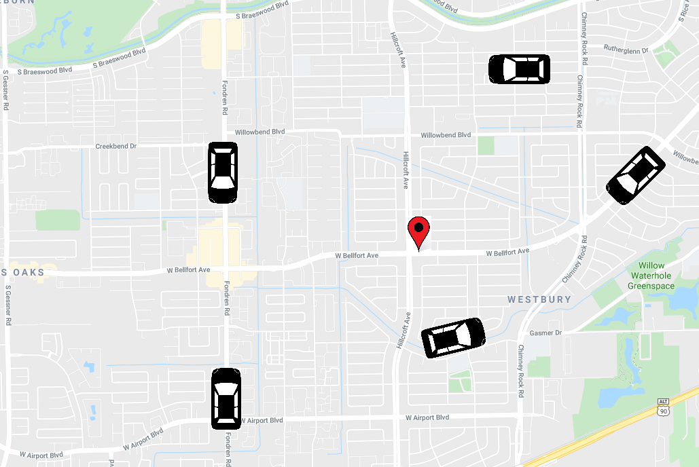

Publications
Click on a title for a brief summary.
In submission
-
Before this work, all the efficient algorithms for the knight's tour problem on n x n boards were based a on divide-and-conquer strategy. We propose the first algorithm following a completely new approach, where the knight repeatedly crosses the entire board in long lines of moves in the same direction. In doing so, we prove the existence of knight's tours in n x n boards with only O(n) crossings (points where the knight crosses over its prior path). All prior algorithms have O(n2) crossings. We also extended our algorithm to 3D boards and giraffe tours, among other generalizations.
.")
Conference publications
-
Greedy algorithms for combinatorial problems are appealing because of their simplicity: at each step, make the choice that appears to contribute the most toward a good solution. Even when greedy algorithms are not optimal, they often find good solutions. This paper is about speeding up four greedy algorithms for four different problems by following a similar technique: we relax the selection rule of the greedy algorithms to one that can be computed more efficiently, while showing that the final solution is unaffected. For instance, we improve the runtime of the multi-fragment algorithm for Euclidean TSP from O(n2) to O(n log n).
Imagine that you have a set of facilities in the plane, like post offices, and you want to assign a
service region
to each one with two constraints: first, each service region should be close to the corresponding facility. Second, all the service regions should have the same area. If we drop the second condition, we end up with the well known Voronoi diagram. Stable matching Voronoi diagrams are a generalization that addresses the second constraint by borrowing the notion of stable matching from market design to strike a fair assignment. In this paper, we give an algorithm to construct these diagrams and show that they may have a quadratic number of faces in the worst case.
.")
The problem in this paper is inspired by private-car services such as Uber or Lyft. We give a data structure that maintains a set of nodes in a graph (the drivers in a road network) subject to two operations: first, updates in the locations of the drivers. Second, queries asking for the closest driver to a given node (the location of a client requesting a ride). In the paper, we study how to strike a balance between the cost of updates and queries. Our technique is based on graph separators: road networks can be split into two halves such that, if the closest driver to a client is in the other half, then it must pass through a small number of nodes.
Defining Equitable Geographic Districts in Road Networks via Stable Matching, short paper in SIGSPATIAL'17.In theory, political districts should be balanced in population and should have compact shapes. Partisan gerrymandering is the manipulation of district boundaries for political advantage. A potential solution is to use geometric
politically-agnostic
algorithms to draw fair districts. In this paper, we consider the use of stable matching, a concept from market design, to assign districts to district centers. Depending on the center locations, we found that the resulting districts from stable matching may be concave or not even connected.
Whereas our later paper gives algorithms for stable-matching Voronoi diagrams in the plane, this paper gives algorithms for such diagrams in a pixelated setting. It also considers the use these diagrams for clustering. We show that they can be used to find clusters that are both compact and equal-sized.

Say that a company owns an (unlabeled) large graph representing, e.g., a social network. This company wants to share the graph with collaborators so that they can study the topology of social networks, but it does not want third-parties to leak the graph. This paper studies how we can modify the topology of the graph to embed indetectable subgraphs that act as a
watermark.
Third-parties should not be able to detect them or erase them by making small modifications to the graph (i.e., any modifications significant enough to erase it should also destroy any meaningful structure of the graph), and the original party should be able to recover it if one of the collaborators leaks it. I had a minor role in this paper, taking care of the experiments.Journal publications
-
This is a journal version of the paper. We extended our algorithm to work for other distance metrics, such as Manhattan distance.
 SANA NetGO: a combinatorial approach to using Gene Ontology (GO) terms to score network alignments, Bioinformatics: Oxford Journals, 2018.
SANA NetGO: a combinatorial approach to using Gene Ontology (GO) terms to score network alignments, Bioinformatics: Oxford Journals, 2018.This is a follow-up paper on our paper on using simulated annealing for the alignment of PPI networks. We consider what is the best objective function for simulated annealing to optimize. In a typical PPI network, we do not know the exact identification of a node, but we have a list of properties or functions, called GO terms, known (or rather, suspected, since the data is noisy) to be associated with that node. Prior network alignment methods try to match pairs of proteins with matching GO terms. However, this fails to account for the frequency of GO terms: rare GO terms identify proteins more precisely. We propose the first GO-centered measure (as opposed to protein-centered), which means that the score is computed as the sum of the contribution of each GO term, rather than the sum of the contribution of each pair of aligned proteins. We give each GO term one
unit
of score, and we distribute it equally among all possible alignments that align it correctly. For instance, mapping correctly a GO term that appears exactly once in both networks is twice as valuable as mapping correctly the two occurrences of a GO term that appears twice on each network (because there are two ways to map that GO termcorrectly
). This GO-centered approach performed better with the data sets in our experiments.SANA: Simulated Annealing far outperforms many other search algorithms for biological network alignment, Bioinformatics: Oxford Journals, 2017.Protein-protein interaction networks are graphs where the nodes represent proteins and edges denote that two proteins can physically interact. Such graphs carry important biological insight, especially when we know the proteins associated to the nodes. However, in many cases, we have PPI networks with unlabeled nodes. In this paper, we attempt to transfer our knowledge about the PPI network from one specie to another via network alignment. The idea is that if we find nodes that are topologically similar in the PPI networks of, e.g., rat and mouse, they are statistically likely to be the same protein. Thus, network alignment is the problem of mapping the nodes of two graphs while preserving the edges as best as possible‐a generalization of the graph isomorphism problem. Since the problem is NP-complete, we use the simulated annealing metaheuristic.
Authors are in alphabetical order—the usual convention in CS theory—except when marked with
*
.
-